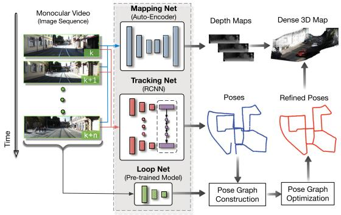
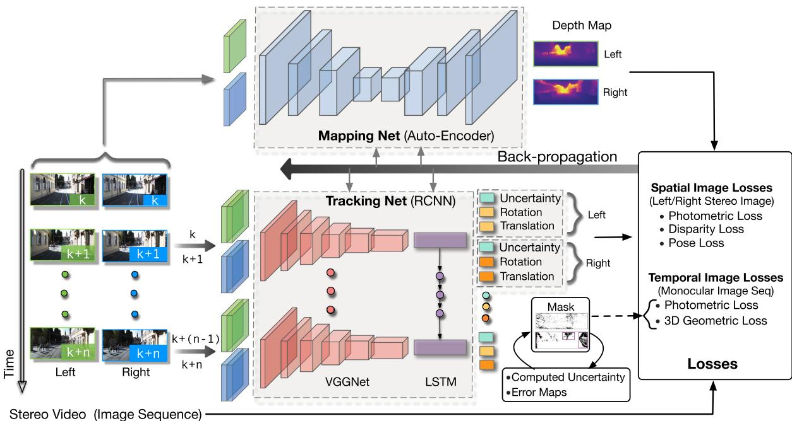
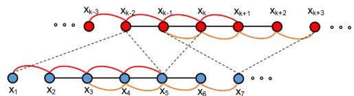
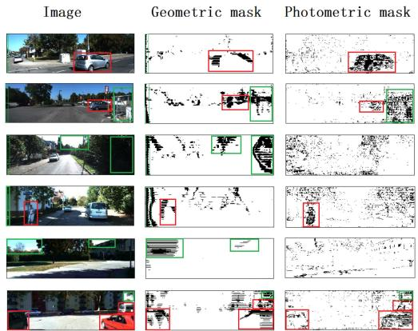
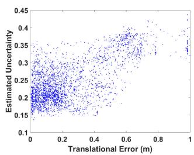
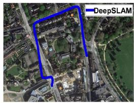

UnDeepVO 团队把「无监督 VO」升级成「完整 SLAM」：加回环、加图优化、加不确定度剔外点，挑战场景照样跑 🛡️
看懂 UnDeepVO 团队怎么把「无监督 VO」补成「完整 SLAM」：Mapping-Net（深度）+ Tracking-Net（RCNN 位姿+不确定度）+ Loop-Net（回环）+ g2o 图优化后端；并搞懂它用不确定度图自适应剔外点（动物体/高不确定区）的鲁棒机制。
0142 的 UnDeepVO 是「无监督 VO」——本节的 DeepSLAM 是同一团队、同一套自监督损失的「SLAM 化升级」。0043–0045 ORB-SLAM 的「三线程 + 回环 + 图优化」是经典 SLAM 范本，DeepSLAM 用深度学习版对应物去追平它。0014 回环铁律在这里也有分量：DeepSLAM 的 Loop-Net 就是回环检测。0040 尺度暗线继续：它仍靠 stereo 训练给单目补尺度。
上一节 UnDeepVO 能「边走边估位姿 + 深度」，但它还不是完整 SLAM——缺两样东西：① 没有回环（走回老地方认不出，地图会越画越歪）；② 没有全局后端优化（不把整段轨迹一起调直）；③ 对动态物体/不确定区域没专门防御。
DeepSLAM（2021）就是给 UnDeepVO 补上这三样：再加一个 Loop-Net 做回环、用 g2o 做位姿图优化、再用「不确定度图」决定哪些像素该被当外点丢掉。一句话：UnDeepVO + 回环 + 图优化 + 不确定度掩码 = DeepSLAM。术语先露脸：SLAM = 同时定位与建图（比 VO 多「建图 + 回环」）；回环（Loop Closure） = 认出「回到老地方」、把地图焊死；位姿图优化 = 把一堆相对位姿一起调成最自洽；不确定度 = 网络对自己某次预测「有多大把握」。
本块叙事链：DeepVO（监督 VO）→ UnDeepVO（自监督 VO + 尺度）→ DeepSLAM（自监督 SLAM） → D3VO（网络嵌进几何后端）→ DROID/DPVO（可微 BA）。DeepSLAM 是「把无监督 VO 扩成完整系统」的代表作，承上（沿用 UnDeepVO 的自监督损失与 stereo 尺度）启下（不确定度思想被 D3VO 接过去做成光度残差加权）。
它和经典 SLAM 的对位：ORB-SLAM（0043）用特征点 + BoW 回环 + 位姿图/BA；DeepSLAM 用深度学习网络出深度/位姿/不确定度 + 预训练 Inception 出回环特征 + g2o 后端。两者都「前端+回环+后端」，只是零件换成了学习式。
图 1 是测试框架总览：单目彩色图进系统，三个网络分别出深度图、位姿、点云。拆解：
encoder-decoder（VGG 式）出稠密深度图。训练用 stereo 恢复尺度。
VGG-CNN + RNN（RCNN），序列长 5，出位姿 + 不确定度。建局部位姿图。
预训练 Inception-ResNet-V2（ImageNet，免训练）出特征向量，余弦距离做回环检测。
把局部位姿图 + 全局回环边一起做图优化，整体调直。

原图注（Fig. 1）：Testing framework of the proposed DeepSLAM. It takes monocular color images as input and produces depth maps, poses, and point clouds as outputs by using Mapping-Net, Tracking-Net, and Loop-Net. Mapping-Net is an autoencoder architecture for depth estimation. Tracking-Net is an RCNN-based architecture for pose estimation. Loop-Net is a CNN architecture for loop closure detection. Pose graph construction and optimization are implemented as the back end. (b) DeepSLAM demonstrates a robust performance in some challenging scenes.
怎么看这张图：三路网络共享同一份单目输入：Mapping-Net 出深度、Tracking-Net 出位姿+不确定度、Loop-Net 出回环。Pose 那一栏说明它把帧组织成局部位姿图（序列长 5），Loop-Net 检到的全局回环再喂给 g2o。
要记住的一句话：DeepSLAM = UnDeepVO 的三件套 + 回环 + 图优化，第一次凑齐「无监督完整 SLAM」。

原图注（Fig. 2）：Training scheme of the proposed DeepSLAM system. We use stereo images to train the system in order to recover the scale information of the environment, which is similar to ones used in training. The spatial image losses between a stereo image pair and the temporal image losses between a sequence image pair are formulated to train the networks. The error map produced from the system is used as the loss masks for outlier rejection. The uncertainty produced from the system is also used to train the networks.
怎么看这张图：训练仍用 stereo（空间损失）+ 连续帧（时序损失），和 UnDeepVO 同源；额外多了「误差图 → 不确定度 → 外点掩码」这条反馈环，用来在测试时剔坏点。
要记住的一句话：训练沿用 UnDeepVO 的自监督套路，新加的是「不确定度→掩码」的鲁棒机制。

原图注（Fig. 4）：Pose graph with local and global connections. The dotted lines represent the global loops detected from Loop-Net, whereas the solid lines represent the local loops generated by Tracking-Net.
怎么看这张图：实线是相邻帧的局部边（Tracking-Net 出的相对位姿），虚线是 Loop-Net 检到的全局回环边。两者一起进 g2o 优化——回环边把「走回老地方」的约束焊进图里，消除漂移。
要记住的一句话：回环边 + 局部边 = 一张自洽的位姿图，这正是 SLAM 比 VO 多出来的那一半。
DeepSLAM 是自监督（仅 stereo，不需位姿真值），和 UnDeepVO 同源但更全。损失由空间（stereo 对）与时序（单目连续帧）两大家族组成：
这句话在说什么：上面 $L^o$ 是「左右位姿一致性」——左右相机各预测一个位姿，硬要让它们一致（λ_p 远小于 λ_r，因为平移比旋转更难对齐）；下面 $L^g$ 是「3D 几何注册损失」，把预测点云当成一个整体对齐（类 ICP），每个外点掩码 $M_g$ 内的点才参与。两项都在逼「深度和位姿自洽」。
| 损失项 | 来源 | 在约束什么 |
|---|---|---|
| 左右光度一致性（L1+SSIM） | stereo 对 | 左右视角应一致 → 深度对 |
| 视差一致性 | stereo 对 | 左右预测深度互相对应 |
| 左右位姿一致性 $L^o$ | stereo 对 | 左右各预测位姿须一致 → 共享尺度 |
| 时序光度一致性 | 单目连续帧 | 帧间 warp 应一致 |
| 3D 几何注册损失 $L^g$ | 单目连续帧 | 预测点云整体对齐（受掩码约束） |
注意：上面五项和 UnDeepVO 几乎同构——DeepSLAM 的「增量」不在损失，而在结构（多一个 Loop-Net）和鲁棒机制（不确定度掩码）。这是组课判断，不是原文自评：它本质是 UnDeepVO 的 SLAM 化延伸，而非全新范式。
DeepSLAM 最值得记的一招：它不从误差图直接剔点，而是先由误差图算不确定度 σ，再用 σ 动态决定「剔掉百分之多少」。公式上 σ 由光度/几何误差图的均值经 sigmoid 得到：
这句话在说什么：σ 是「我对这次估计有多没把握」——光度误差均值 μ_p 和几何误差均值 μ_g 越大，σ 越接近 1（越不放心）。然后掩码阈值 $q_{th}$ 随 σ 调：越不放心，剔掉的百分位数越高（宁可多丢点也别让坏点拖累）。红框=运动物体、绿框=高不确定深度（天空/暗处/边缘），都被当外点。
图 10 把它画成「几何掩码 + 光度掩码」：红框框住移动物体、绿框框住高不确定深度。图 11 进一步显示：估计的不确定度与平移/旋转误差强相关——网络「觉得自己不准」的地方，确实错得多，说明这个不确定度是真有用的信号（不是摆设）。

原图注（Fig. 10）：Geometric mask and photometric mask for outlier rejection. The red boxes represent moving objects and the green boxes represent depth values with high uncertainty.
怎么看这张图：红框是「被判定在动的物体」（行车、行人），绿框是「深度估不准的区域」（天空、暗角、边缘）。这两类都被掩码排除，不参与后续优化——动态物体和不确定区不再污染建图。
要记住的一句话：不确定度不是炫技，是用来「该丢的点就丢」的硬机制。

原图注（Fig. 11）：Estimated uncertainty against the corresponding translational and rotational errors. It shows that the estimated uncertainty values are strongly correlated with both of them. (a) Seq. 03. (b) Seq. 05.
怎么看这张图：横轴是估计不确定度、纵轴是真实误差，点沿对角线分布——不确定度高时误差也高。说明网络估的「把握」和真实准确度对得上，这个不确定度可信。
要记住的一句话：「知道自己不知道」是鲁棒 SLAM 的前提；DeepSLAM 用 σ 把这句话落进代码。
KITTI（seq04）：t_rel 4.56% / r_rel 1.90°（对比 ORB-SLAM 单目 0.65/0.18、VISO2-S 2.12/2.12）。注意它比不过同域的 ORB-SLAM 单目——这符合本块总账「同域高精度仍是经典法强」。但它的杀手锏是跨域鲁棒：在 RobotCar 的雨/夜/过曝挑战场景，LSD-SLAM、ORB-SLAM-S 直接失效，DeepSLAM 仍工作（Table II 全 √）。深度 Abs Rel 0.147–0.172。实时：Tracking-Net 40Hz、整系统 ≈20Hz。

原图注（Fig. 7）：Robustness performance of our DeepSLAM on some challenging environments in RobotCar dataset. The left part of each subfigure shows the trajectory produced from our DeepSLAM, and the right part is the testing images taken in different locations. (a) Images with distortion. (b) Images with excessive exposure. (c) Images collected at night while raining. (d) Images collected while raining. Note that the GPS and INS data are very poor in RoboCar dataset 2015-05-29-09-36-29 (seq. 06) due to raining.
怎么看这张图：四张子图分别是畸变、过曝、雨夜、下雨场景，左边轨迹、右边实景。DeepSLAM 在这些「经典法会挂」的条件下仍给出连贯轨迹——不确定度掩码把动态/高不确定区排掉是关键。
要记住的一句话：学习式 VO/SLAM 的主场是「挑战/跨域」；同域高精度仍归经典法。
这张图在画什么：单目视频进三个网络：Mapping-Net 出深度、Tracking-Net 出位姿+不确定度、Loop-Net 出回环；三者汇进 g2o 后端做图优化，输出位姿+深度+点云地图。
怎么看这张图：① 三网对应经典 SLAM 的「前端估计 + 回环 + 后端」；② 回环边把「走回老地方」焊进图，消除漂移——这是 VO 没有的；③ 不确定度从 Tracking-Net 流到掩码，决定哪些点被剔。
要记住的一句话：DeepSLAM 是 UnDeepVO 的「SLAM 化」：加回环、加后端、加不确定度。
这张图在画什么：同一场景（砖墙+行人+天空），左是原图，右是网络估计的「把握图」：砖墙被反复扫过、绿色=自信留用；行人（在动）和天空（空、深度估不准）被标红、当外点剔掉。
怎么看这张图：① 颜色深浅表示置信度——见得多、几何稳的区域更绿；② 红框就是不确定度掩码的执行：动态物体和空区域不进优化；③ 这正对应图 10（红框=动体、绿框=高不确定深度）。
要记住的一句话：「知道自己不知道」→ 该丢就丢，是 DeepSLAM 在挑战场景不崩的原因。
下面哪个是 DeepSLAM 相对 UnDeepVO 真正的增量？
正确。DeepSLAM 与 UnDeepVO 同源（同团队、同自监督损失、同 stereo 尺度），增量在结构：多一个 Loop-Net 做回环、用 g2o 做全局后端、用不确定度图动态剔外点。它本质是 UnDeepVO 的「SLAM 化」延伸，不是新范式——这点是组课判断。
不对。两者骨干都是 VGG 式，DeepSLAM 没有「换更大网络」式的本质升级。它的增量是功能性的：回环检测 + 图优化后端 + 不确定度外点剔除，把「VO」补成「SLAM」。损失项和 UnDeepVO 几乎同构。
把 0141–0143 收个口：
| 论文 | 身份 | 训练信号 | 比上一篇多什么 |
|---|---|---|---|
| DeepVO | 端到端 VO（监督） | 真值位姿 | —（起点） |
| UnDeepVO | 无监督 VO | stereo 自监督 | 免标签 + 尺度 |
| DeepSLAM | 无监督 SLAM | stereo 自监督 | 回环 + 后端 + 不确定度 |
下一步 0144 D3VO 走另一条升级路：不自己当黑箱 VO，而是把深度/位姿/不确定度网络嵌进经典 DSO 直接法的前后两端——用学习补几何方法的尺度漂移与鲁棒性短板。注意 D3VO 的「不确定度加权光度残差」正是 DeepSLAM 不确定度思想的升级应用。本块到 D3VO 开始从「替换流水线」转向「网络+几何后端融合」。
按课文数字，下面哪句对？
正确。KITTI seq04 上 DeepSLAM t_rel 4.56%/r_rel 1.90°，而 ORB-SLAM 单目是 0.65/0.18——同域高精度仍是经典法强。DeepSLAM 的强项在跨域挑战场景（RobotCar 雨/夜），那里 LSD-SLAM、ORB-SLAM-S 失效它仍工作。这正印证 0011「位姿只被吃掉很窄一段」。
不对。同域 KITTI 上它明显弱于 ORB-SLAM 单目（4.56/1.90 vs 0.65/0.18）。它的价值不在「同域精度」，而在「挑战/跨域鲁棒」——雨夜、过曝、动态物体下仍跑。把学习式 VO 当成「全面碾压经典」是误解。
和 UnDeepVO 一样，单目本身无尺度。训练时用 stereo 图像对，由已知基线 B 推出 metric 深度，把尺度学进网络权重；测试时只喂单目也能出带尺度结果。这延续 0040 尺度暗线的「双目补尺度」一站。若纯用单目自监督，尺度会不可恢复。
它不直接剔「误差大」的点（测试时没真值、算不了误差），而是用训练/推理时的光度/几何误差图估计不确定度 σ，再用 σ 动态定百分位阈值 $q_{th}$——越不放心剔得越多。这是「用模型自己的信心」当代理信号，比硬编码阈值自适应，且在没真值时也能用。
回环检测本质是「两张图像不像同一个地方」的检索任务，用 ImageNet 预训练的 Inception-ResNet-V2 提取通用特征、再算余弦距离即可，不必为 SLAM 重训。这和本季检索块（0134–0140）的思路一致：通用特征 + 距离度量就能做地点识别。它免训练、即插即用，是工程上的省力选择。
原文把它当独立系统介绍，但横向看：同团队、同自监督损失、同 stereo 尺度，结构只是 UnDeepVO 加了 Loop-Net + g2o + 掩码。本块把它定性为 UnDeepVO 的 SLAM 化延伸，是写作 agent 的归纳（规范允许这样的判断，但要求注明「是判断不是原文自评」）。它的创新更在「完整系统拼装」而非新理论。
DeepSLAM 用不确定度做「外点掩码」（二值剔点）；D3VO 把不确定度升级成「连续权重」，直接给光度残差加权（自动降权动态/反射/高频区），嵌进 DSO 的 BA。两者思想同源——「用网络估计的把握调节几何一致性」——DeepSLAM 是雏形，D3VO 做进优化层。这正是本块「网络+几何后端融合」的伏笔。